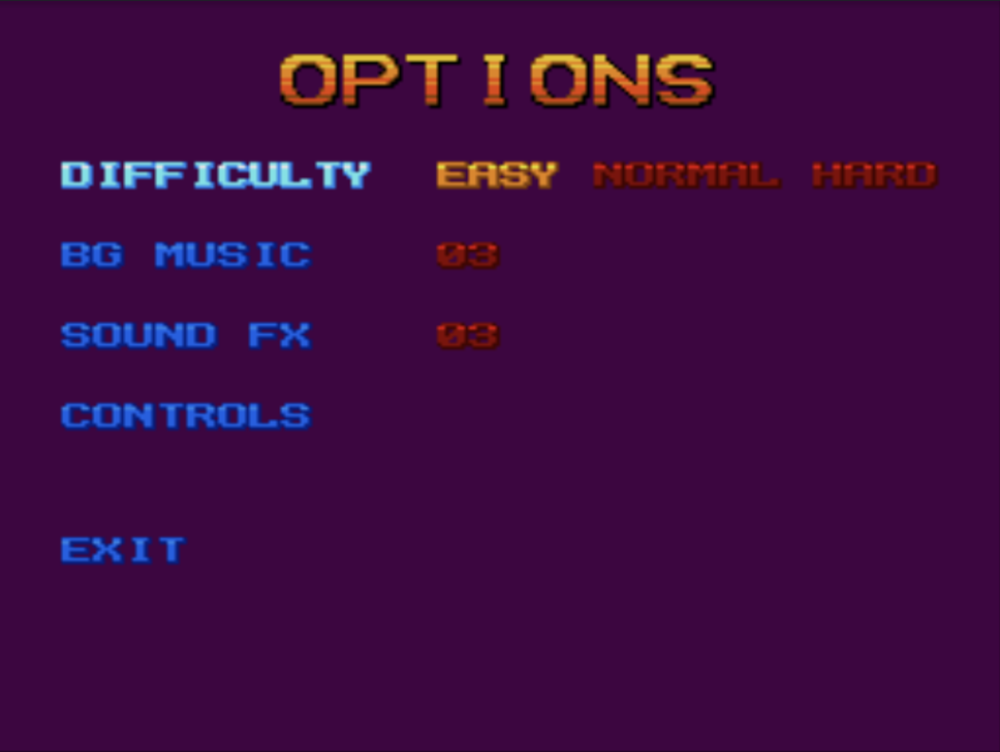

This game is an old Super Nintendo side-scrolling action game based off of a film from 1994.
Starting ScreenControl Menu

Options Menu
The graphics are soft with a nostalgic feel, with the rocky and viney ground creating a jungle-like world. Its trees and branches allow the character to grab on and swing off of as well as the viney platforms throughout.
Sometimes it's difficult to find the path to follow to complete certain levels. For example, I was stuck on level 1 zone 3 most often because the endpoint was not very clear.
You can pick up coins, a red power that destroys enemies around you, as well as health points (blue and green powers). These are obtained from breaking chests or finding them around the level.
The music is a bit goofy for the context of the game. It sounds pixelated, almost like a pitch off of Pacman, and repeats during the duration of the gameplay. The menu and screens in between actions have more fitting soundtracks.
The game doesn't appear to "comment" on itself other than giving instructions and context for the goal of the game, which is to find the old man's dagger and samurai sword that can open a door to a cave of gold.
Being that this game is a simplistic and straight to the point action game, there is rarely any commentary and none of it relates to our reality or cultural issues.
Beginning of Level 1Control MenuNinja Battle
There are 3 characters to play as: Rocky, Colt, or Tum-Tum. They are all similar but posess different weapons and slightly different heights. Nothing too distinctive though.
This game could use some improvement in the controls, especially when ran on the internet. I found the controls by guessing. It would also benefit from having an explanation of the controls and mechanics of the character.
Overall, I enjoyed playing this game. It was exactly what you'd expect from a retro ninja action game. I'd rate it a 3.5/5 due to its vagueness in regard to the controls and how to play. In the options menu it was impossible to know if the settings were even applied. The visuals were top notch, and brings back nostalgia from playing the Nintendo DS as a kid. Really fun game with a classic plot as well.